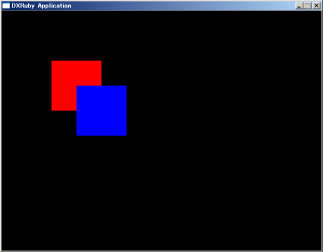
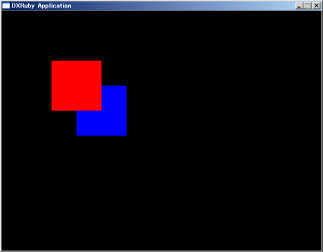

画像の描画順について
Window.draw系のメソッドの引数にzというものがあります。
これは3D的な奥行きではなく、描画順を表しています。
zを省略すると0となり、同じ値が指定されていると、Window.draw系を呼んだ順番に奥から描画されます。
require 'dxruby'
image1 = Image.new(100, 100, [255, 0, 0]) # 赤い四角
image2 = Image.new(100, 100, [0, 0, 255]) # 青い四角
Window.loop do
Window.draw(100, 100, image1) # 赤い四角を描画する
Window.draw(150, 150, image2) # 青い四角を描画する
end

zを指定すると、呼び出し順ではなく、zの順番にソートされます。
require 'dxruby'
image1 = Image.new(100, 100, [255, 0, 0]) # 赤い四角
image2 = Image.new(100, 100, [0, 0, 255]) # 青い四角
Window.loop do
Window.draw(100, 100, image1, 2) # 赤い四角を描画する
Window.draw(150, 150, image2, 1) # 青い四角を描画する
end

zを省略すると0を指定したことと同じになり、全てのdrawで0が指定されていると、ソート処理は省略されます。
従って、全ての描画で描画順を指定しない場合に、描画処理は最も高速となります。
ソートする必要がないように処理の順番を考えるのが理想的ですが、DXRubyのソート処理はかなり高速ですので、必要とあらば遠慮なく使って問題ありません。
TOPへ戻る